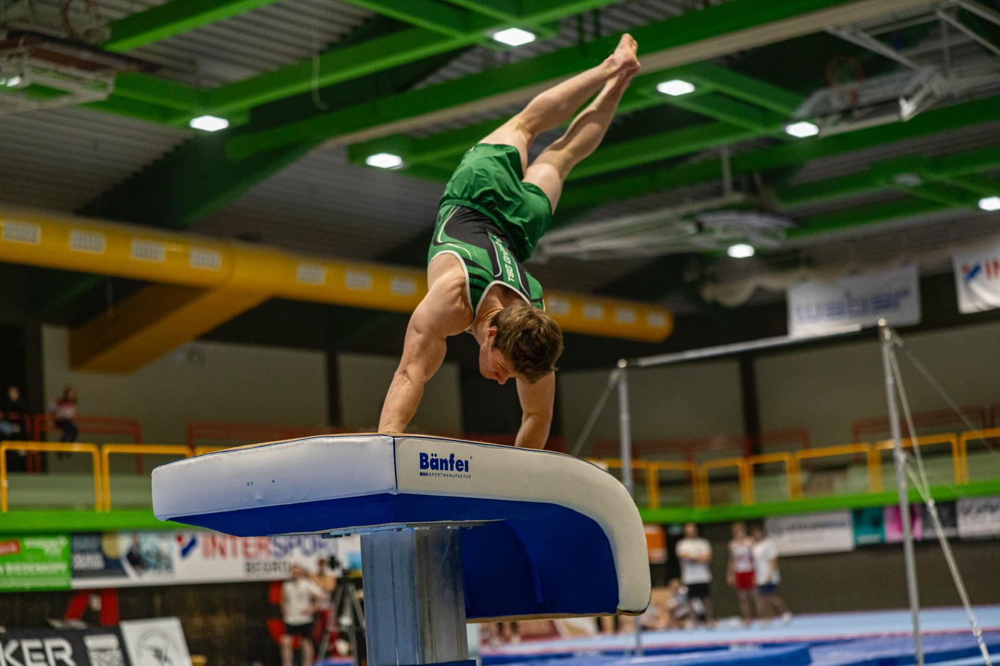

Industrial biotech
Thesis & process work
Research thesis on enzyme production and process optimization in industrial biotechnology.
Learn more →I’m focused on industrial biotechnology and research software. Gymnastics is a side interest that keeps me disciplined and focused while I explore biology and build practical tools.
Industrial biotech
Systems and process thinkingBioinformatics
bestPlasmidTestDigestGymnastics
Side interest, not the main focusResearch thesis on enzyme production and process optimization in industrial biotechnology.
Learn more →A practical sequence analysis utility for plasmid digest planning.
View project →Gymnastics supports focus, strength, and discipline as a secondary interest.
More about it →
I’m interested in industrial biotechnology and practical research tools for scientific workflows. Gymnastics is a valuable side interest that supports focus and discipline.


I build tools for biology and explore industrial biotechnology. My work is rooted in practical systems, software, and scientific thinking.
Gymnastics is a side interest that supports my work ethic and discipline. The main focus here is on biotech and research software.
Systems-level thinking and process-oriented biology.
Curious projects like bestPlasmidTestDigest show how I apply code to biology.
A side interest that keeps me strong, focused, and disciplined.
Reach out to discuss industrial biotechnology, research tools, or training.